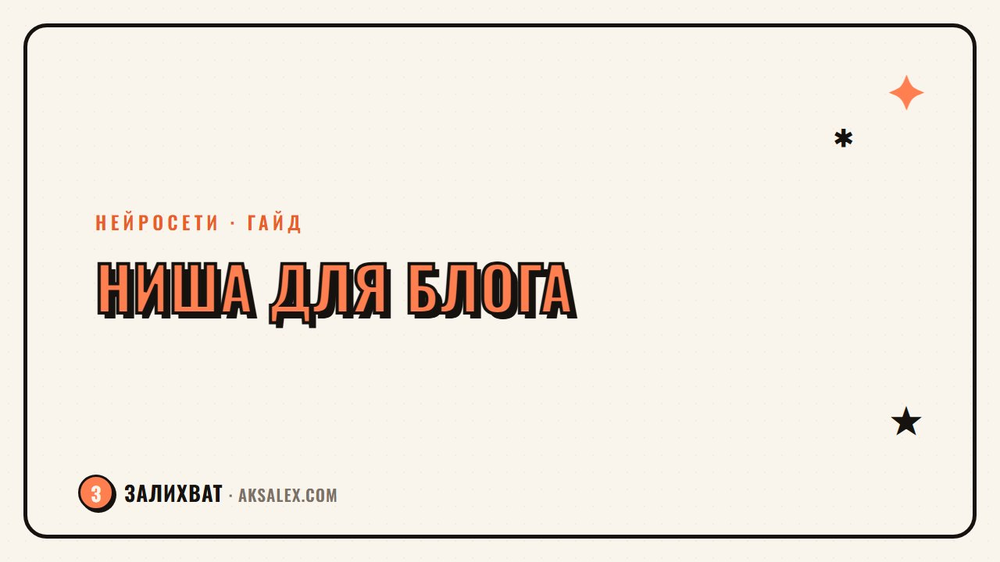

Как выбрать нишу для блога с нейросетями

Тема нейросетей взлетела так быстро, что каждый второй блогер решил про них писать. И теперь новичку кажется: ниша уже занята, поздно заходить. Это не так - рынок огромный, а вот выбор конкретного направления решает половину успеха блога. Разберём, как найти свою нишу, а не копировать чужую.
Почему широкая тема «нейросети» не работает
Если завести блог с описанием «пишу про нейросети», аудитория не поймёт, зачем ей подписываться именно на тебя. Тема слишком большая: сюда входят генерация картинок, тексты, видео, автоматизация бизнеса, разработка ИИ-продуктов и десятки других направлений.
Широкая тема хороша для новостного канала с большой командой. Для личного блога она превращается в кашу: сегодня пост про Midjourney, завтра про нейросети в маркетинге, послезавтра про этику ИИ. Читатель не понимает, зачем следить за таким блогом дальше первой недели.
Ниша - это не тема, а конкретная проблема конкретного человека, которую ты решаешь регулярно.
Критерии, по которым стоит выбирать нишу
Прежде чем выбрать направление, проверь его по нескольким параметрам. Так отсеешь идеи, которые кажутся интересными, но не жизнеспособными.
- Личный опыт - ты используешь эти инструменты сам, а не читал о них в чужих статьях
- Спрос - люди реально ищут решение этой проблемы, а не просто интересуются темой
- Конкуренция - в нише есть игроки, но нет монополистов, забравших всю аудиторию
- Монетизация - понятно, как зарабатывать: курсы, консультации, партнёрки, реклама
- Долгосрочность - тема не исчезнет через полгода вместе с трендом
Если идея проходит хотя бы четыре пункта из пяти - можно пробовать. Если два-три - стоит доработать формулировку ниши.
Сузь тему до формата, аудитории и результата
Рабочая формула ниши выглядит так: инструмент или технология плюс аудитория плюс результат, который она получает. Например, не «нейросети для текстов», а «ChatGPT для копирайтеров, которые хотят вдвое ускорить написание статей».
Примеры конкретных ниш
- Нейросети для малого бизнеса - автоматизация переписки с клиентами и обработки заявок
- ИИ-инструменты для дизайнеров - ускорение генерации макетов и мокапов
- Нейросети в SMM - контент-план и посты для соцсетей без выгорания
- ИИ для репетиторов и преподавателей - создание тестов и методичек
- Нейросети для видео - монтаж и озвучка роликов без студии
Чем конкретнее формулировка, тем проще писать заголовки, придумывать темы постов и объяснять людям, зачем на тебя подписываться.
Как проверить нишу перед стартом
Не нужно тратить месяцы на анализ - достаточно нескольких простых проверок, которые займут пару вечеров.
| Способ проверки | Что смотреть |
|---|---|
| Поисковые подсказки | Вводишь начало запроса про нейросети и смотришь автодополнение |
| Комментарии в чужих блогах | Какие вопросы задают читатели под похожими постами |
| Тематические чаты и форумы | Какие проблемы люди обсуждают чаще всего |
| Конкуренты | Сколько блогов уже пишут по узкой теме и какой у них охват |
| Пробные посты | Публикуешь 3-5 постов по теме и смотришь реакцию до полноценного запуска |
Если пробные посты не набирают вообще никакой реакции - причина не всегда в нише. Иногда дело в подаче или заголовках. Но если тишина повторяется раз за разом на разных площадках - это сигнал пересмотреть направление.
Ошибки при выборе ниши
Есть несколько типичных ловушек, в которые попадают новички на старте.
- Выбор ниши только потому, что она модная, без личного интереса к теме
- Копирование формата успешного блогера один в один без своей подачи
- Слишком узкая ниша, где через месяц заканчиваются идеи для постов
- Ставка на один инструмент, который завтра могут закрыть или изменить условия доступа
- Отказ менять нишу, даже если полгода нет роста и вовлечённости
Нормально скорректировать нишу через пару месяцев после старта. Первая версия редко бывает финальной - и это не провал, а часть процесса.
Что делать после выбора ниши
Когда направление определено, следующий шаг - собрать контент-план на месяц вперёд с постами внутри выбранной темы. Это покажет, хватает ли идей и материала для регулярных публикаций.
Параллельно стоит сформулировать одно предложение, которое объясняет твой блог за пять секунд: кому он полезен и какую проблему решает. Если предложение получается путаным или слишком общим - формулировку ниши стоит доработать ещё раз.
Частые вопросы
Можно ли вести блог про нейросети без узкой ниши?
Можно, но только если это команда или крупный медиапроект. Для личного блога узкая ниша работает лучше - она формирует понятную аудиторию и упрощает продвижение.
Как понять, что ниша уже перегрета конкурентами?
Если по запросу выходят десятки крупных блогов с миллионной аудиторией и одинаковой подачей - шансов пробиться меньше. Но узкий подсегмент внутри такой ниши почти всегда свободен.
Стоит ли менять нишу, если через месяц нет роста?
Месяц - слишком короткий срок для выводов. Дай направлению хотя бы три месяца регулярных публикаций, прежде чем принимать решение о смене темы.
Нужен ли опыт работы с нейросетями, чтобы выбрать нишу в этой теме?
Личный опыт сильно помогает - ты пишешь честнее и быстрее находишь проблемы аудитории. Но можно учиться параллельно с ведением блога, если честно показывать свой путь.
Можно ли совмещать несколько ниш в одном блоге?
На старте лучше сфокусироваться на одной, чтобы читатель понял, зачем подписываться. Расширять направления можно позже, когда основная аудитория уже сформирована.
а не вручную